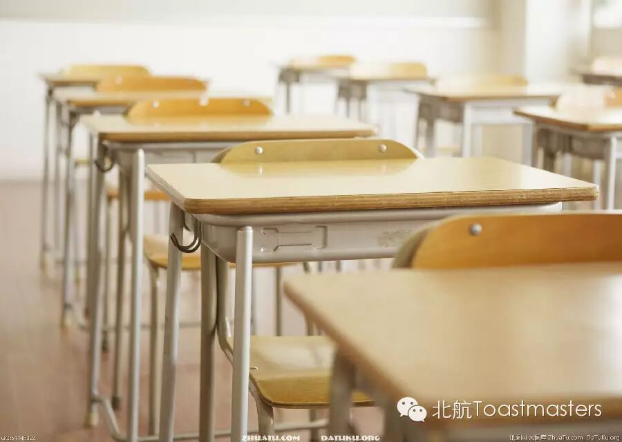
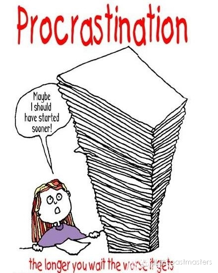
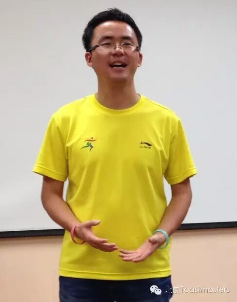
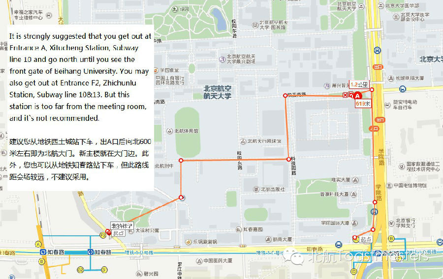

Beautiful School Life
Time: Friday September.12 19:30-21:30
Venue: Room G849, New Main Building, Beihang University

Toastmaster: Sophie
Table Topic Master: Jack
September is a special month. It is the beginning of a new school year. For most of us, the time as a student is perhaps the most memorable period in our lives. During your school life, you meet a lot of people, you face a lot of things. After all the ups and downs, those experiences have made you who you are. And one magic thing is that you always miss the beautiful school life whenever it occurs to you. So this time, no matter you are a student or not, let's turn the time back and be students again.
Prepared Speech
FIGHTING AGAINST PROCRASTINATION
CC2 Cindy

How many times have you put off your work till tomorrow? How many times have you thought you still have enough time until the last second of the deadline? Procrastination is not just one of the hottest words these years but also a serious problems in today's society. We all suffer from it to some extent. But this time, we shall make a difference: let's fight it back!
SHARING FROM
2014 KL International Convention
Wesley

This is Wesley! He is a very special figure in Beihang Toastmasters Club, for he is the founding president of our Club! We are so happy to have him again this Friday. Of course, he is a really active speaker. Last month, he attended the 2014 Global Summit of Toastmsters International. You can imagine how many great speakers were there. This time, Wesley is going to share his experiences of this trip. Don't you feel excited? Just come!

Map
Our meeting venue is RoomG849, New Main Building, Beihang University (北航新主楼G849房间). Click here to see large map. And you can phone to Deron for help.
TEL: 180-0125-3933
See you in the meeting!
Here is the two-dimension code of our WeChat Subscription,please scan the code or seach the name "北航Toastmasters" to subscribe for our pushing service.
https://mp.weixin.qq.com/s/Mj0IiSjKmckd0qzjltnrfw
本页为抢救式本地归档，图文已永久保存。